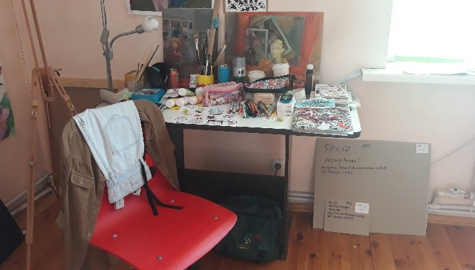
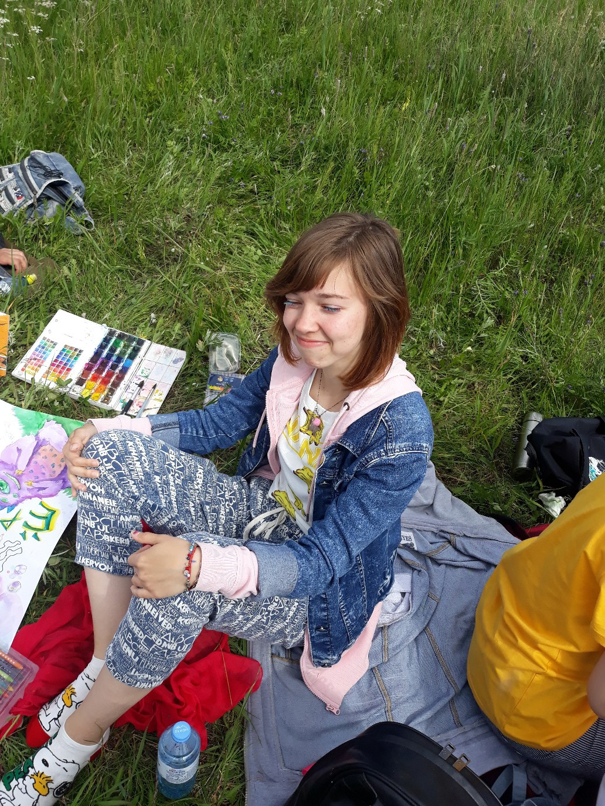

На главную
Овчинникова Анастасия Анатольевна

Дата рождения: Апрель 2000
Место рождения: Невьянск
Страница в интернете: https://vk.com/asyalesss
Каталог работ
Приглашение, 2025
Котенок, 2025
Плюшевые игрушки, 2025
Натюрморт с кувшином, 2025
Натюрморт, 2025
С мармеладками на глазах, 2024
Голубая, 2024
Лягушка, 2024
Портрет, 2024
Портрет женщины с голубыми волосами, 2024
Девушка с зонтом, 2024
Фрик, 2024
С курицей, 2024
Узор, 2024
Няша-горничная, 2023
Мем с бургером, 2023
Фантазийный пейзаж, 2023
Автопортрет, 2023
Шарж на Рефата Мамутова, 2023
Закат, 2023
Небо, 2023
Дерево, 2023
Русалка, 2022
Дом, 2021
Линейный набросок интерьера, 2021
Девушка в динамичной позе, 2021
Церковь, 2021
Дачи, 2021
Рыбка, 2021
Эмоции, 2021
Композиция, 2021
Овощи в корзине, 2020
Преодолевая расстояния, 2020
Портрет девушки, 2020
Сказочный лес, 2020
Растение в банке, 2020
Карамельный мужчина, 2020
Лесная нимфа, 2020
Природа, 2020
Девушка с лягушками, 2019
Цветы, 2019
Портрет брата, 2019
Этюд, 2019
Портрет одногруппницы, 2019
Фрукты, 2018
Девушки с собакой, 2018
Дома, 2017
Портрет мужчины, 2017
Воин освободитель, 2014-2015
Sword Art Online - Kirito, 2013
Краткая биография
Страницы в интернете:
- https://vk.com/asyalesss
- https://storynavigation.com/user/asya.less
Уже в 5 классе школы рисовала на заказ для одноклассников. Когда это заметили учителя, ее вызывали на разговор к директору.
В 2016-2020 училась в Уральском колледже прикладного искусства и дизайна (филиал ФГБОУ ВО «РГХПУ им. С.Г.Строганова»), специальность Художественная роспись по металлу.
2019-2020: Организовывала совместные выезды на природу с другими студентами-художниками, в ходе которых совместно создавались картины: https://vk.com/wall-149859040_1063 , https://vk.com/wall-149859040_341
В 2020 г. поступила на ФХО НТСПИ, специальность Изобразительное искусство и дизайн.
2024: Поездка в Крым.
2025: Поездка в Краснодар.
10.09.2025: Участвовала в I окружном Форуме рабочей молодежи (https://ntagil.org/molodost/news/286757)
Интересы
Помимо живописи, занимается изготовлением украшений из полимерной глины, мягких игрушек.
Составление начато 18.05.2025
Галерея

Рабочее место

На пленэре

На педагогической практике
Комната Анастасии в общежитии НТГСПИ, 2025

На рабочем месте
Сгенерировано SmallSoft CatalogTools{kind=link}
{kind=link}
{kind=link}